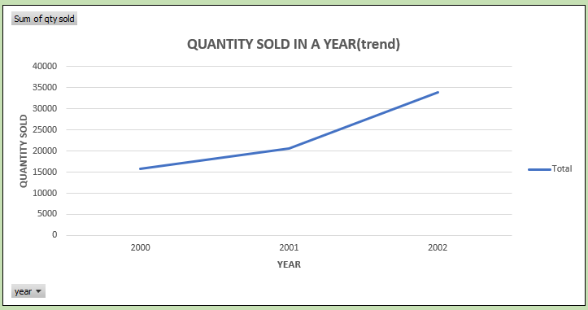
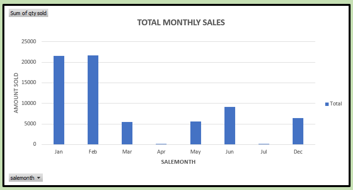
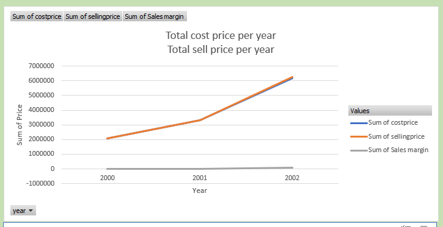

Vehicle Sales Raw Data
This is a preview of the Excel sheet containing the vehicle sales data before trying to make sense of the data through
data validation, data cleaning, pivot table analysis, creation of
dashboard and graphs. The analysis are also shown on this page and in other pages for different
tools such as MySql, Tableau etc. This body of work including the data used were generated for this Analyst portfolio
project. It is not linked to any individual or organisation.


This chart shows the total sales made by each vehicle brand. Toyota lead with over 30000 sales, followed by BMW, while Land Rover had the least sale.
This shows that people were buying Toyota vehicles more and Land Rover less.
This could be due to affordability (Land Rover could be more expensive than Toyota Vehicles), availability of Vehicle (Toyota vehicle could have more sales outlet across the states when compared to the other vehicles and so many other factors.
Further analysis of the factors listed above would explain the reason for the disparity in sales across the different brand.

This shows the total vehicle sold yearly between 2000 to 2002. Over the years sales increased tremendoously.
Early 2000 to late 2000, sales increased linearly, from an average of 15000 units at the start of the year to 20000 units at the end of the year. That is 5000 units increase.
Early 2001 to late 2001 vehicle sales doubled linearly when compared to the previous year. By the end of Year 2001, average sales increased by 15000 units.
The graph highlights the increasing demand of vehicles by customers. Between 2000 and 2001, 5000 units of vehicles were sold across board. Whereas between 2001 and 2002, 15000 units of vehicles were sold. An increase of 150% from the previous year.
This increase can be linked to the "back to office" work culture among other reasons.

This chart shows the total monthly sales of all the vehicles for three years.
January and February had the highest sales.
This trend signifies a pattern. It shows that vehicles are sold more in January and February than any other month.
This could be due to:
1. Availability of extra disposable income due to company bonus and 13th month, paid by some companies to their staff at the end of the year.
2. Accountability, some people wait for the beginning of a new year to look at the previous years balance sheet before making such huge purchase like a vehicle.
3. Winter weather, mobility is easier with vehicles during this season.

This chart shows the trend of selling price and cost price for all the vehicles sold within the year.
The area between the two graph represents the profit margin.
The profit margin is minimal as shown on the graph. This is because majority of vehicle retail shops are owned by the vehicle companies. This eliminates middlemen and extra charges, because vehicles on display are brought directly from the production plant.